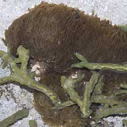
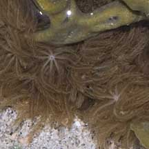
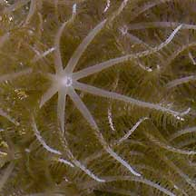
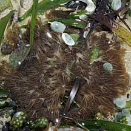
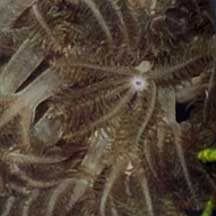
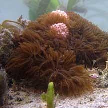
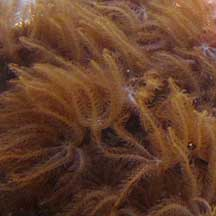
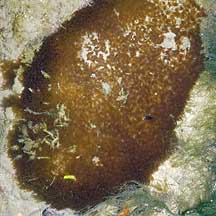
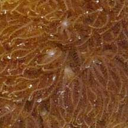

|
|
| soft corals text index | photo index |
| Phylum Cnidaria > Class Anthozoa > Subclass Alcyonaria/Octocorallia > Order Alcyonacea |
| Brown
feathery soft coral Awaiting identification Family Xeniidae updated Nov 2019 Where seen? This colony of tiny animals is sometimes seen on our Southern shores, but is often overlooked. The colony grows on stones and hard surfaces. Features: Colony about 10-15cm. Only one kind of polyp (autozooids). Polyps about 1-1.5cm in diameter, on stalks about 1-2cm long. The eight skinny tentacles have long thin side branches (pinnules) arranged in 1 to 4 rows along both edges of each tentacle. pale brown, oral disk and main tentacles pale, the entire animal the same colour. The tiny polyps don't retract completely into the common tissue, and don't pulsate. Other soft corals with this form include Anthelia and Sansibia of the Family Xeniidae. |
|
 Beting Bemban Besar, May 11  |
 Sentosa, Mar 05  Oral disk and main tentacle pale, side branches brown. |
 Cyrene Reef, Jul 09  |
|
 Terumbu Semakau, May 10  |
 Kusu Island, May 04  |
*ID needs confirmation. Species are difficult to positively identify without close examination.
On this website, they are grouped by external features for convenience of display.
| Brown feathery soft corals on Singapore shores |
On wildsingapore
flickr
|
| Other sightings on Singapore shores |
|
References
|